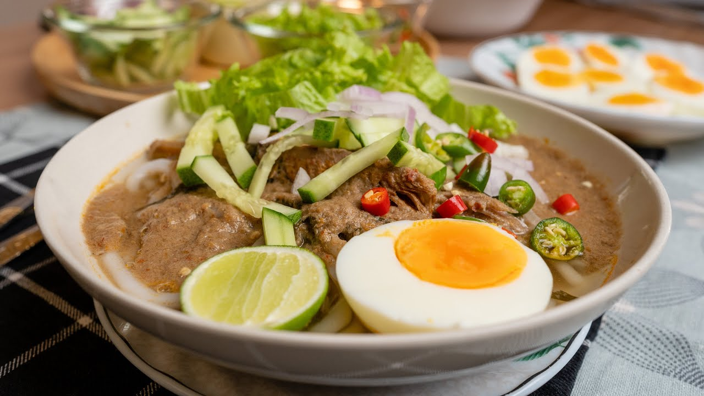

Tentang laksa Kedah
Laksa ini dikenal sebagai laksa utara dan makanan ini sering menjadikan hidangan semasa musim perayaan.
Mereka menggunakan belacan dan daun selom sebagai hiasan bersama timun, hirisan bawan dan limau kasturi.
Jom kita lihat bahan-bahan yang diperlukan dan cara untuk membuatnya
Bahan-bahan yang diperlukan ialah:
1 kg ikan kembung
15 keping asam keping
Daun kesum
Garam kasar
Serbuk perasa, jika suka
Bahan kisar yang diperlukan ialah:
2- 3 biji bawang besar
3 biji bawang merah
2 ulas bawang putih
4 sudu besar cili kering - 150 gram
1 ibu jari belacan
Bahan-bahan lain yang diperlukan ialah:
2 bungkus laksa beras kering
Daun selom/daun pucuk gajus - hiris
Timun - hiris
Bawang besar - hiris
Cili padi - hiris
Limau kasturi/limau nipis
Telur rebus - belah 2
Cara-cara untuk membuatnya
Masukkan bahan kisar di dalam periuk dan dimasak lama lama sehingga mendidih dan naik bau.
Kisar tulang dan isi ikan dengan air rubusan dan tapis.
Masukkan isi ikan yang dikisar dan juga air rebusan ikan ke dalam periuk dengan air secukupnya.
Masukkan asam keping dan daun kesum.
Masukkan garam dan serbuk perasa.
Masak lama lama supaya rasanya sebati dan mesra.
Hidangkan dengan laksa beras, telur dan ulam ulaman. Siap!
Nota:Jika dibiarkan semalaman, keluarkan sikit asam keping, dikuatiri terlebih masam.